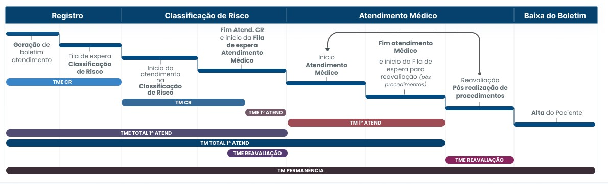
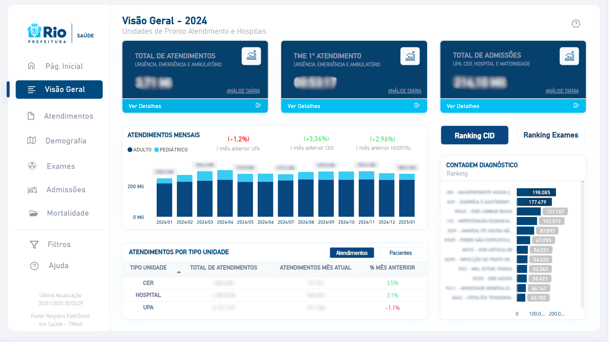
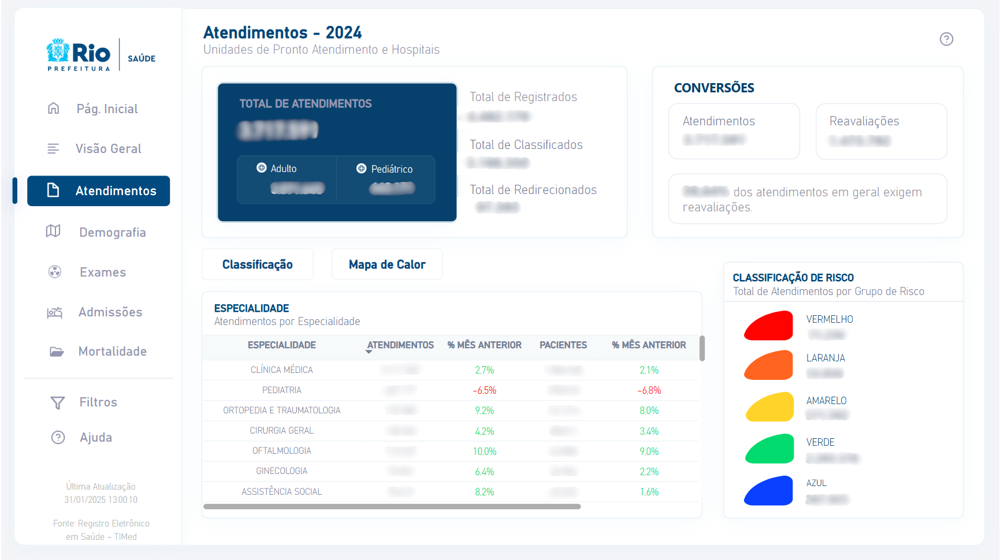
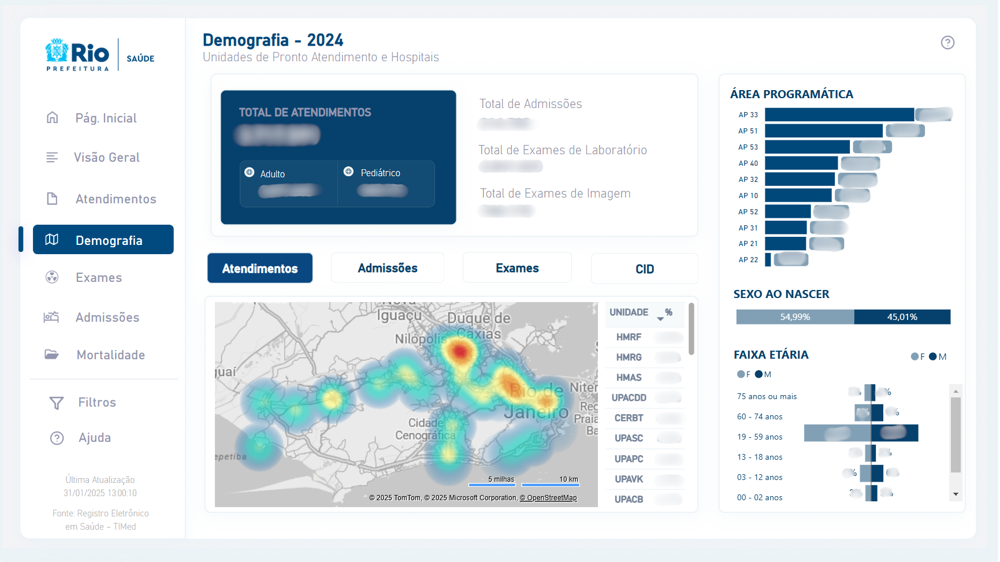
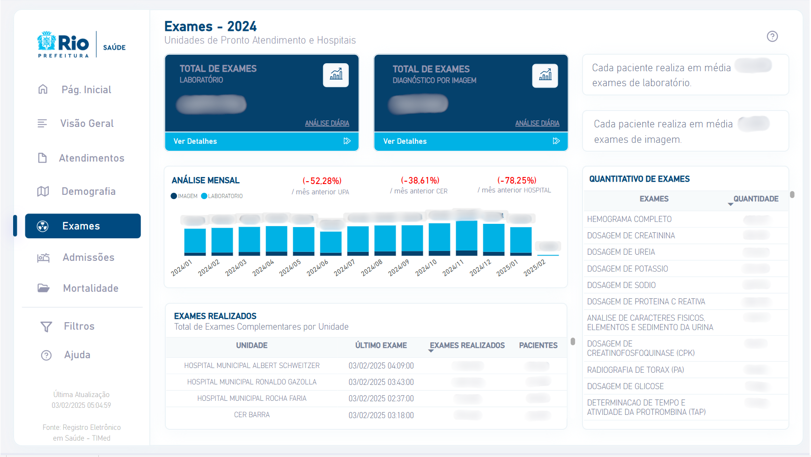
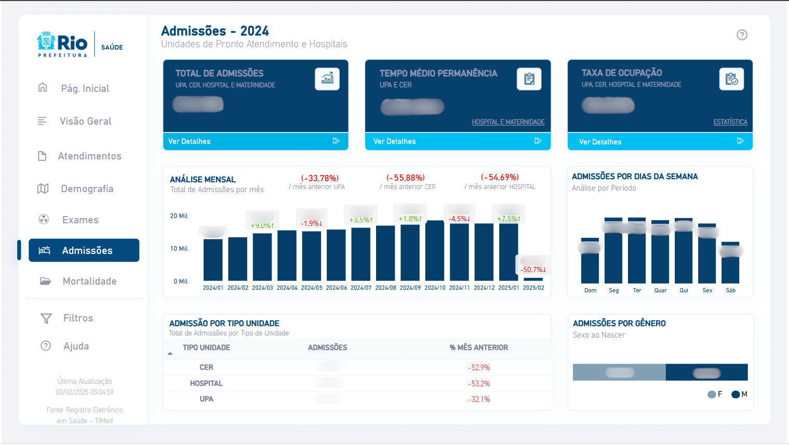
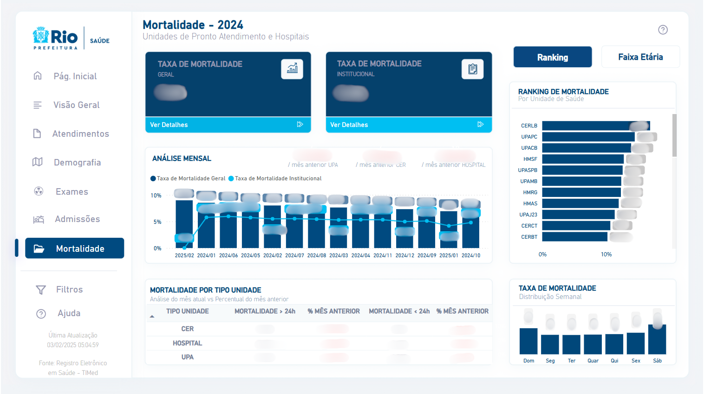

Regras de Negócio
Fluxo Assistencial em unidades de Urgência e Emergência

Total Atend: Total de atendimentos realizados no período filtrado.
TME CR: Tempo Médio de Espera para Classificação de Risco. Refere-se ao tempo médio que os pacientes aguardam para serem classificados quanto à urgência do atendimento.
TM CR: Tempo Médio da Classificação de Risco. Representa o tempo médio gasto no processo de classificação de risco.
TME 1° Atend: Tempo Médio de Espera até o 1° Atendimento. Indica o tempo médio que os pacientes aguardam, após a classificação de risco, até o início do primeiro atendimento médico.
TM 1° Atend: Tempo Médio do 1° Atendimento. Refere-se ao tempo médio que os pacientes permanecem em consulta ou sendo atendidos na sala de atendimento.
TME TOTAL 1° Atend: Tempo Médio de Espera Total até o 1° Atendimento. Consiste no tempo de espera desde o registro do paciente até o primeiro atendimento médico no consultório.
TM TOTAL 1° Atend: Tempo Médio desde o registro do paciente até o término do 1° atendimento médico.
TME Reavaliação: Tempo Médio de Espera para Reavaliação. Indica o tempo médio de espera dos pacientes para uma reavaliação médica após o primeiro atendimento.
TM Reavaliação: Tempo Médio de Reavaliação. Refere-se ao tempo médio gasto no processo de reavaliação médica.
TM Permanência: Tempo Médio de Permanência. Refere-se ao tempo médio total desde a admissão até a alta do paciente.
Visão Geral

Total de atendimentos: Quantidade total de atendimentos médicos realizados nos consultórios das unidades de urgência, emergência e ambulatório.
TME 1° atendimento: Tempo médio de espera desde o registro do paciente até o primeiro atendimento médico no consultório.
Total de admissões: Total de pacientes admitidos nas unidades, seja por internação ou observação (UPAs CERs).
Atendimentos Mensais: Total de atendimentos realizados em adultos e crianças, com comparação percentual em relação ao mês anterior, categorizado por tipo de unidade (UPA, CER e Hospital).
Atendimentos por Tipo Unidade: Total de atendimentos no período filtrado, detalhando o volume de atendimentos do mês vigente e a variação percentual em relação ao mês anterior.
Ranking CID: Lista dos principais diagnósticos registrados nos atendimentos médicos.
Ranking Exames: Principais exames realizados nas unidades, permitindo alternância entre exames de imagem e laboratoriais.
Atendimentos

Total de Registrados: Total de boletins abertos, ou seja, pacientes registrados nas unidades.
Total de Classificados: Total de pacientes que passaram pelo processo de classificação de risco nas unidades.
Total de Redirecionados: Total de pacientes classificados com risco azul e redirecionados para atendimento na Clínica da Família.
Reavaliações: Total de atendimentos realizados após a primeira avaliação médica.
Especialidade: Total de atendimentos por especialidade, incluindo a variação percentual em relação ao mês anterior e a soma de pacientes distintos.
Classificação de Risco: Total de pacientes atendidos na classificação de risco, agrupados por nível de gravidade.
Demografia

Faixa Etária: Percentual de atendimentos realizados por grupo etário, excluindo reavaliações.
Sexo ao Nascer: Percentual de atendimentos realizados por gênero, excluindo reavaliações.
Área Programática: Percentual de atendimentos realizados por área programática, excluindo reavaliações.
Mapa: Exibe a dispersão geográfica dos usuários das unidades de saúde. Utilize os botões acima (Atendimentos, Admissões, Exames e CID) para filtrar a visualização conforme a categoria desejada.
Unidade | %: Representa o percentual de atendimentos, admissões ou exames em relação ao total das unidades.
Exames

Total de Exames Laboratoriais: Total de exames laboratoriais realizados e liberados.
Total de Exames de Imagem: Total de exames de imagem realizados e liberados.
Análise Mensal: Quantidade de exames laboratoriais e de imagem realizados ou liberados a cada mês.
Exames Realizados: Total de exames realizados e liberados por unidade, incluindo a soma de pacientes distintos.
Quantitativo de Exames: Lista de exames realizados com a respectiva quantidade.
Admissões

Tempo Médio de Permanência UPA e CER: Tempo médio entre a data de entrada na enfermaria e a data de alta.
Taxa de Ocupação: Percentual da média de taxa de ocupação hospitalar de todas as unidades.
Admissões Semanais: Total de admissões realizadas por dia da semana.
Admissões por Gênero: Percentual de admissões realizadas por gênero.
Admissões por Tipo Unidade: Total de internações, incluindo a comparação percentual em relação ao mês anterior.
Mortalidade

Taxa de Mortalidade Geral: Percentual de óbitos entre pacientes internados em relação ao total de saídas hospitalares.
Taxa de Mortalidade Institucional: Percentual de óbitos entre pacientes internados por mais de 24 horas em relação ao total de saídas hospitalares no mesmo período.
Análise Mensal: Comparação mensal entre as taxas de Mortalidade Geral e Institucional.
Mortalidade por tipo unidade: Comparação da mortalidade em internações superiores e inferiores a 24 horas em relação ao mês anterior.
Ranking de Mortalidade: Percentual de óbitos em relação ao total de óbitos registrados em todas as unidades de saúde.
Óbitos por Faixa Etária: Distribuição dos óbitos por grupo etário.
Taxa de Mortalidade - Distribuição Semanal: Percentual de óbitos registrados ao longo da semana.
Considerações
Admissões: Pacientes admitidos em leitos de unidades de modalidade hospitalares ou admitidos em leitos de unidades de modalidade de emergência em local de observação.
Comparação mês a mês: Todas as comparações são feitas considerando o mesmo período dos meses envolvidos. Por exemplo, o período do dia 01 até 10 de janeiro é comparado com o período de 01 até 10 de dezembro.
Adulto | Pediatra: A separação é feita pela idade do paciente e não pela especialidade do atendimento.
- Adulto: 13 anos completos em diante
- Pediatra: até 12 anos e 11 meses de vida